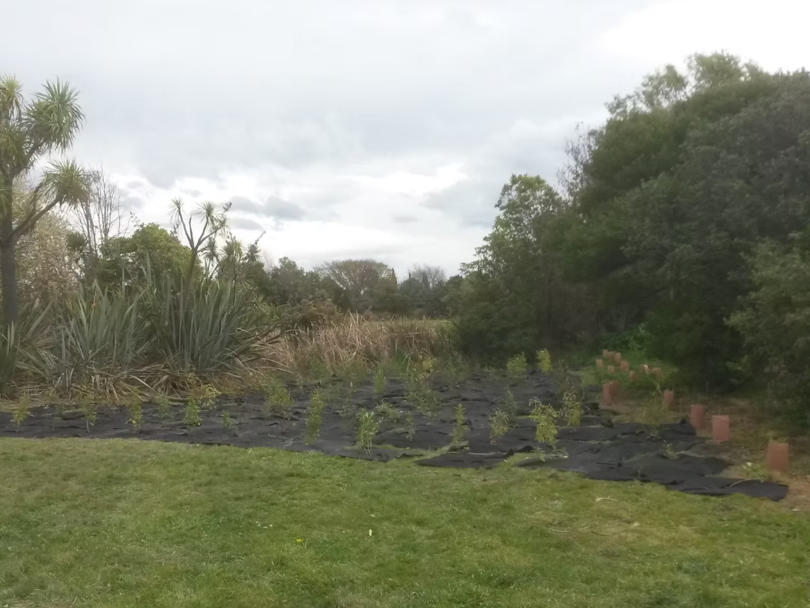
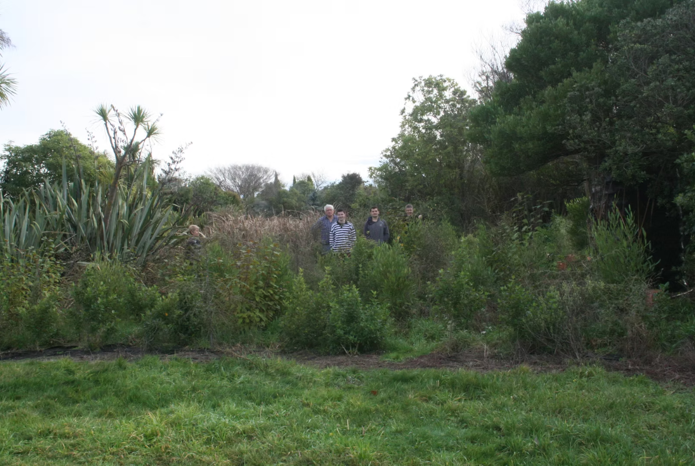
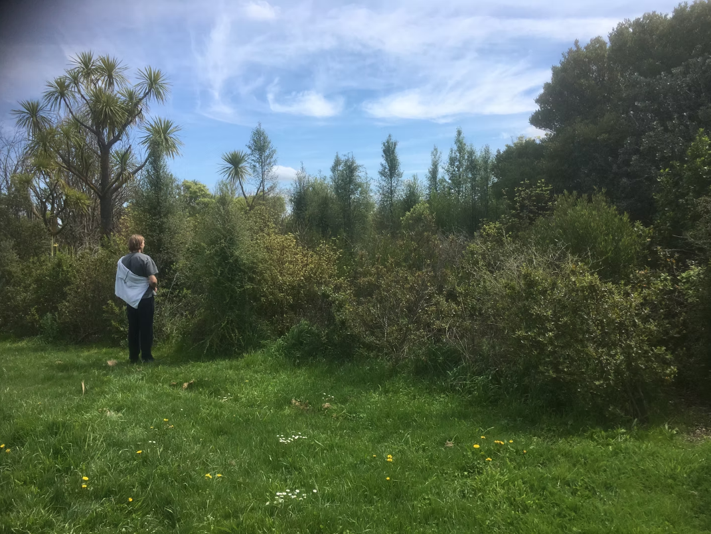

How are we doing?
Our 2025 highlights, our impact since 2016, and the people who make it possible.



Highlights 2025
This year we grew 60,000 plants. Of those 60,000, around 24,000 were planting at our Atlantis St and QEII sites. The remaining 36,000 were gifted to other planting groups around the Canterbury area. In particular, many plants went to Waimakariri Irrigation, to be used in their long term project to plant out the banks of the entire Waimakariri river.

Our impact
Eco action was founded in 2016. We've since grown more than 250,000 plants, planted more than 108,000, and donated more than 88,000. Eco-Action has established 26 satellite nurseries around Christchurch. With your help we want to keep doing great plantings, so that we, and those that come after us can enjoy a thriving environment.
- 250,000+ plants grown
- 108,000+ planted
- 88,000+ donated
- 26 satellite nurseries
- 2016 founded
Species we've planted
We've planted:
- Akeake
- Black seeded sedge
- Cabbage tree
- Carex secta
- Coprosma propinqua
- Coprosma Robusta
- Corokia cotoneaster
- Five Finger
- Flax cookianum
- Flax Tenax
- Giant Rush
- Griselinia litoralis
- Hebe koromiko
- Hebe small leaf
- Kahikatea
- Kanuka
- Kowhai microphylla
- Kowhai prostrate
- Lacebark
- Horeria
- Lancewood ferox
- Lancewood straight
- Lophomyrtus
- Manuka
- Marbleleaf
- Muhlenbechia astonii
- Mysine australis
- Ngaio
- Oleria paniculata
- Pittosporum eugenoides
- Pittosporum tenuifolium
- Ribbonwood Plagianthus regius
- Toitoi
- Totara
- Gossamer grass
- Wineberry
A huge thanks to:
-
Parents and friends
Who “donated a tree planted” helping Eco-Action to purchase the gear to plant, grow, and finally mulch and maintain the planted trees.
-
Fulton Hogan
For the transport of shipping containers filled with plants. Thi allows us to massively expand the size of our plantings, and eliminates lots of manual labour.
-
Anonymous donors
For their generous cash donations that go to many essential parts of our operation.
-
CLS, Canterbury Landscape Supplies
For the excellent potting mix, seed mix and pumice that keep the plants healthy.
-
Protranz Ltd
For donating both the transport and the water used for the insurance irrigation.
-
Stark Brothers Engineering
For the 12 trips in their 20 tonne tip truck transporting the mulch to site.
-
House of Travel, Merivale
For their signage, and cash contribution towards purchasing weedmats and PB3 bags.
-
Christchurch Arborist businesses
For chipped mulch to help reduce herbicide use. Mulch limits weed germination between our newly planted trees. (250m3 by Mar 2019 so far) In particular thanks to Reuben from Regarding Trees Ltd for donating his time and machine plus worker to chip and turn to mulch, weed tree species on the Brooker Ave area like Elderberry, Cherry, Robinia.
-
The Christchurch City Council
For most of our funding, all of our planting land, and all manner of essential support and services.
-
Fire and Emergency, Christchurch
For filling our water tanks before planting days, and watering our plantings.
-
Red Tree Environmental Services
For many thousands of 70x70 pots, which they proactively reached out to donate.
-
Mitre10 Mega, Papanui
For discounts for bins.
-
Isaacs Construction
For all the road cones that make such excellent irrigation stands for all our nurseries.
-
Bunnings, Shirley
For donating all sorts of odds and ends. Buckets, watering cans, shovels, trays, rakes, brushes.
-
Shirley Boy's High School, Christ's College, St Margarets, Rangi Ruru and Cathedral Grammar
For seed funding and ongoing financial and logistics support as well as access to student time and transport.
-
The Waiora Trust
For tens of thousands of pots, trays, and frames used in propagation.
-
The Department of Corrections and those providing community service
For their invaluable work in the red zone, doing the hard yards, when we aren't able to.
-
Kingspan insulated panels
For their kind donation of $4000.
-
Mainland Tank and Drums Ltd
For donating the tanks used for irrigation during droughts, and tanks that are repurposed as plant carriers.
-
Envirowaste
For their many wheeliebins, for potting mix to supply all our satellite nurseries.
-
The Toolshed
For the 33% discount, allowing us to purchase 100 spades.
-
Rossco Bobcats
For donating and transporting around 50m3 of bark mulch to act as weed control at the Chimera Crescent block that was planted without being mechanically pre-mulched.